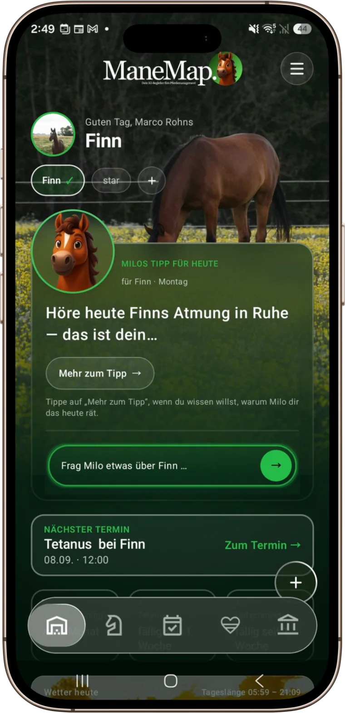
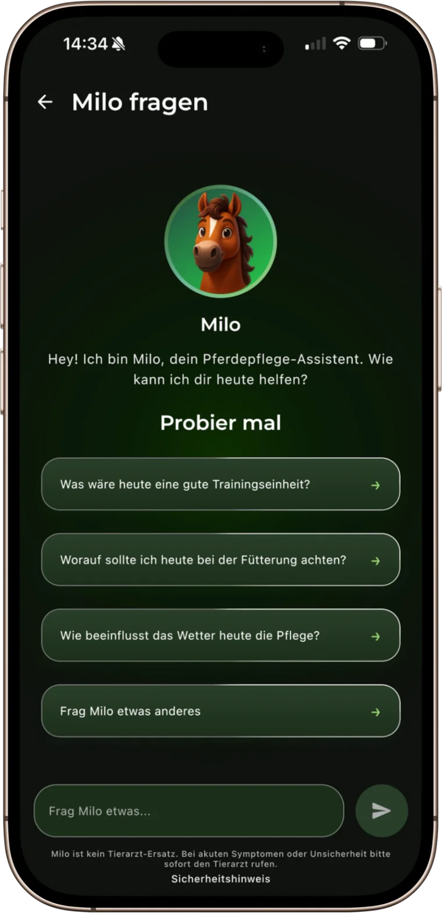

Build the product
Turn a useful AI idea into working software across the model, backend and user experience.
- LLM integration & RAG
- Mobile and backend delivery
- Data and API architecture
AI engineer · Product builder · Enterprise adoption
I connect hands-on LLM engineering with enterprise delivery: from RAG, safety gates and mobile products to rollout, enablement and adoption.
Open to full-time roles, projects and collaborations
Where I create value
I bring the technical system, the quality controls and the people using it into one delivery path.
Turn a useful AI idea into working software across the model, backend and user experience.
Design for the limits of generative AI before those limits become user-facing failures.
Help teams understand the tool, adopt it in real workflows and improve it through evidence.
Selected work
One side of my work is hands-on product engineering. The other is making technology succeed with customers and internal teams.
An AI-powered horse-care app I designed, built and shipped end to end — now live with paying subscribers.
Enterprise adoption
Owned enterprise onboarding, QBRs, renewals and expansion; drove adoption of AI-powered SEO features.
Promoted in 12 months · Recovered and renewed a €10k/month accountLaunched AI chatbots with enterprise service teams and used adoption data to improve the product.
Live product evidence
ManeMap turns horse, weather, care and training context into daily guidance and a focused conversation with Milo. The same shared Kotlin codebase ships to both stores.
What I own: product direction, architecture, data model, safety controls, evaluation and releases. Claude Code and MCP integrations accelerate implementation, QA and store work.


How I work
I define the user decision and risk, ship a complete path, test its failure modes, and leave teams able to run it.
Clarify the user, the decision, the desired outcome and the real risk.
Ship the smallest complete path across model, data, backend and interface.
Test retrieval, safety, failure modes and quality gates before release.
Give teams the context, examples and feedback loop required for adoption.
Recruiter shortcut
Get a focused answer about my experience, technical decisions or role fit. Every response is grounded in the CV and points back to its source.
Grounded CV assistant
If the CV does not support a claim, the assistant says so.
AskCV sends your question to Supabase and Google Gemini. Questions and answers are retained for up to 90 days. Privacy details
Technical range
Engineering the system, making its limits visible, and helping people put it into practice.
AI systems
RAG, vector search, embeddings, prompt engineering, safety gates, evaluation, regression testing, agents and MCP.
Product engineering
Kotlin, Compose Multiplatform, Supabase, PostgreSQL, Row Level Security, Edge Functions, TypeScript and REST APIs.
Delivery
AI adoption, enterprise customer success, onboarding, QBRs, stakeholder management, enablement and project delivery.
Roles where I can ship grounded AI products, harden the user-facing system and help teams adopt it in real workflows.
Next step
Let’s compare the role, the problem and what useful progress would look like.